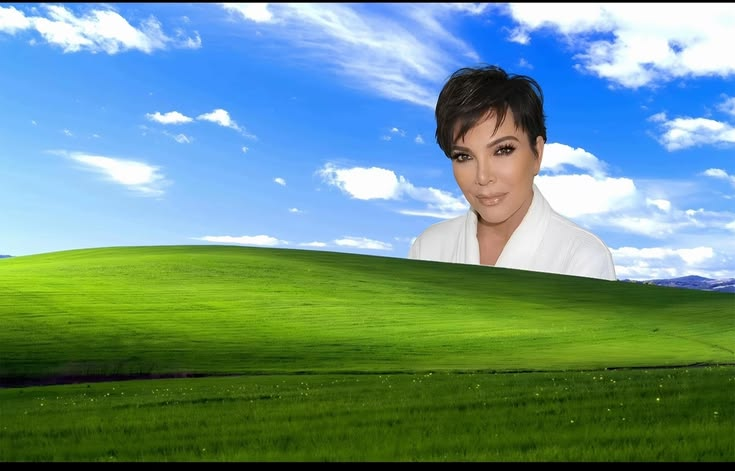
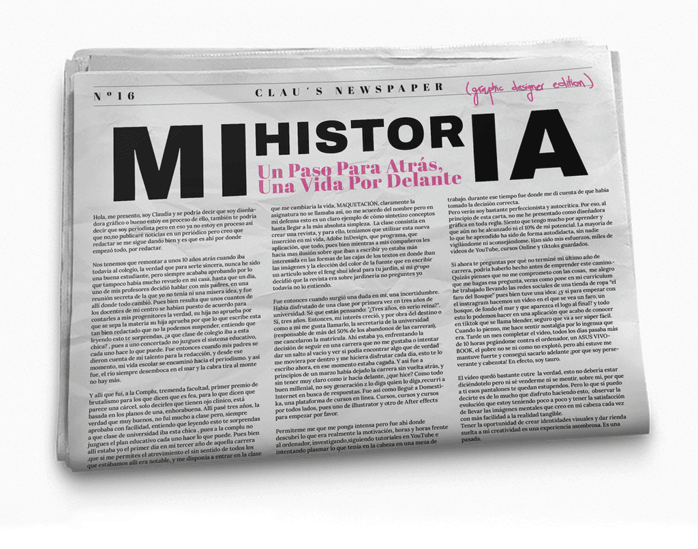

Labbb, escritorio de proyectos personales de Claudia López-Asiaín





Hola, soy Claudia.
Empecé en Periodismo porque se me daba bien escribir y porque nadie me había dicho que existía otra opción. Tres años después, una clase de maquetación cambió el plan por completo. Descubrí Adobe InDesign, me obsesioné, y ahí se acabó lo de publicar noticias. Lo siento, cuarto poder.
Lo que vino después fue bastante autodidacta: miles de horas en YouTube, Domestika a horas intempestivas, un ASUS VIVO-BOOK que aguantó más de lo que debería, y la certeza de que esto era lo mío aunque todavía no supiera hacerlo bien del todo.
He construido desde cero la identidad visual de una marca de moda, diseñado para el departamento de comunicación de una empresa, y hecho webs, carteles y logos para proyectos que merecían verse bien. En paralelo, el Máster en Dirección de Arte en LABASAD — que fue básicamente aprender a justificar con palabras lo que el ojo ya sabía.
Soy bastante autocrítica, bastante perfeccionista, y convencida de que estoy al 10% de mi potencial. Eso no me asusta. Me parece el mejor sitio desde el que empezar.
January 26, 2026 at 11:48AM
El Faro del Bosque — Art Director & Content CreatorConstruí la identidad visual de esta tienda de moda femenina desde cero. Identidad, tono, contenido, redes. Todo.
qdq — Diseñadora GráficaCreatividades para redes, newsletters, emails, infografías. Dentro del departamento de comunicación de la empresa.
Freelance — 2023 hasta ahoraWebs, carteles, logos. Para marcas pequeñas y proyectos con personalidad.
LABASAD — Máster en Dirección de Arte en Comunicación, 2026.Y antes, Periodismo en la Complutense. Que también cuenta.
Julio 09, 2026 12:16 AM
Hola, soy Claudia.
Empecé estudiando Periodismo porque quería contar historias. Resulta que las mejores se cuentan sin palabras.
Llevo unos años haciendo que las marcas se vean como lo que son (o como lo que deberían ser). He construido identidades desde cero, dirigido campañas para moda y cultura, y aprendido que la diferencia entre un buen diseño y uno memorable suele ser una sola decisión valiente.
Trabajo con Photoshop, Illustrator, Blender, Midjourney y todo lo que haga falta. Pero lo que más uso sigue siendo el criterio.